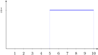
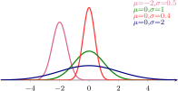
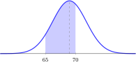
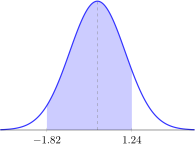
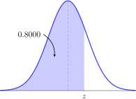
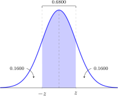

The random variables and probability distributions we have looked at thus far have all been discrete. In this section, we introduce continuous random variables. Recall that a continuous variable can take on any possible value in a range of values. That is, there are infinitely many values that the variable could have, and there are no gaps between those values.
The way that probability works with continuous random variables can be strange. The probability of any particular value of the variable is always going to be 0. To get non-zero probabilities, we must look at a range of possible values for the variable. To better understand this concept, suppose that a random variable \(X\) is defined to be the height, in feet, of a randomly selected person in the city of Seattle. What is \(P(X=6)\text{?}\) In other words, what is the chance that a randomly selected person will be exactly 6 feet tall?
If you are being picky, you will have to say the probability is zero. This is because nobody is exactly 6 feet tall. You can't be exactly six feet tall down to the atom. Instead, you can say that you are within less than \(\frac{1}{32}\)nd of an inch of 6 feet tall, or in some similar tiny range around the exact 6 foot height.
We will start our exploration of continuous random variables and probability distributions by looking at the continuous uniform distribution, or just the uniform distribution. Most of our time in this section will, however, be spent introducing the normal distribution. The normal distribution is probably the most important distribution you will see in this text, and is certainly one of the most common in every day life.
Objectives
After finishing this section you should be able to
describe the following terms:
normal distribution
probability density curve
standard normal distribution
uniform distribution
accomplish the following tasks:
Understand the area principle for continuous probability curves
Identify and find probabilities in a uniform distribution
Graph normal distribution curves and regions under those curves
Use z-scores to convert to the standard normal distribution
Use the normal distribution table to look up probabilities for a given range of z-scores
Use the normal distribution table in reverse to look up z-scores for a given probability
When dealing with discrete distributions and histograms, we were reminded of the special role that the area principle plays in probability graphs. That is, the area of a given bar in those graphs was exactly equal to the probability of the outcome associated with that bar. This principal holds true with continuous probability distributions as well. In the case of a continuous variable, however, we no longer have a histogram, but instead a smooth (and continuous for those of you who have seen Calculus) curve called a density curve.
Definition3.3.1.
The probability density curve for a random variable \(X\) is a graph in which the possible values of \(X\) are listed as a continuous range on the horizontal axis, and the area in a range of \(X\) values and below the curve corresponds to the probability that \(X\) takes on one of those values.
There are certain things that all probability density curves have in common.
Principle3.3.2.Properties of Probability Density Curves.
Any probability density curve for a continuous random variable \(X\) will have the following properties.
The density curve is represented by a smooth curve
The total area under the curve is 1
\(P(a \lt X \lt b)\) is the area between the vertical lines \(X=a\) and \(X=b\) and below the curve.
\(P(X=a) = 0\) for any single value \(a\text{.}\)
To better understand this connection between area and probability, we will briefly examine one of the simplest probability distributions for a continuous random variable.
Definition3.3.3.
A continuous random variable \(X\) has a uniform distribution, and is called a uniform random variable, if the probability of \(X\) is spread evenly within the range of possible values of \(X\text{.}\)
Graphs are an excellent tool for helping us understand continuous probability distributions. In the example below, and in those that follow, we will always start with a graph of the distribution and mark the regions containing the outcomes in which we are interested.
A random variable \(X\) has a uniform distribution with possible values between 5 and 10. Sketch a graph of the probability density curve, and use this graph to find the probability that:
We start by drawing a graph of the density curve for \(X\text{.}\) Because the distribution is uniform, this means the curve will be a horizontal line above the range of possible values of \(X\text{,}\) which is from 5 to 10. Since the area under the curve must equal the probability and the probability that \(X\) is between 5 and 10 is 1 (this is the sample space because all possible values of \(X\) are between 5 and 10), we must make the height \(h\) the number for which \(h \times (10-5) = 1\text{.}\) That means, \(h \times 5 = 1\text{,}\) so \(h = \frac{1}{5}\text{.}\) This yields the first graph.

Figure3.3.5.Uniform density curve for \(X\)
Now let's look at how this graph can help us to find the probability that \(X\) has a value in the ranges listed above. For each of the ranges of values of \(X\) given, we shade in the area under the graph and then find that area using \(\text{width } \times \text{ height}\) (since this is a rectangular region).
The probability of \(X\) between 7 and 8 is found by taking the width of the range \((8 - 7) = 1\) and multiplying by the height, which is \(\frac{1}{5}\text{.}\) This gives a probability of
The probability that \(X\) is more than 8.5 is the area in the shaded region shown. That has a width of \((10 - 8.5) = 1.5 = \frac{3}{2}\) and a height of \(\frac{1}{5}\text{.}\) Therefore,
Note that in the above example, it did not matter if we were looking for \(P(X > 8.5)\) or \(P(X \geq 8.5)\) because the only difference is whether the single point, \(X=8.5\text{,}\) is included. Remember than in a continuous random variable, the probability that \(X=8.5\) is zero. So,
A random variable \(X\) has a uniform distribution where the height of the probability density curve is \(\frac{1}{5}\) and the smallest possible value of \(X\) is 4.
Question: if the values of \(X\) are all in one contiguous range, what is the maximum possible value of \(X\text{?}\)
Several times in this book we have referred to a “mound-shaped” distribution, going so far as to give this a definintion in chapter 1. We now give the continuous distribution with this shape its more formal name.
Definition3.3.13.
A random variable \(X\) has a normal distribution if the probability density curve of \(X\) is mound-shaped with a single peak at the mean.
Notice that we said that the random variable has a normal distribution, not the normal distribution. This is because there is an entire family of normal distributions.
The shape of a normal distribution is controlled by two things: the mean of \(X\) (which gives the center) and the standard deviation (which gives how spread out the graph is). The picture to the right shows several different normal distributions with their associated mean and standard deviation. To help you visualize how these two parameters affect the normal density curve, play with the following interactive normal distribution, changing the values of \(\mu\) and \(\sigma\) to affect its shape.
Figure3.3.14.Normal Distributions
So what are the properties common to every normal distribution? These are summarized below.
Theorem3.3.15.Properties of Normal Distributions.
If \(X\) is a random variable with a normal distribution, then the probability density curve for \(X\) has the following properties.
The total area under the curve is 1
The curve is mound-shaped, meaning that it has a single peak at the mean and is symmetric about the mean
\(P(X \lt \mu) = P(X \gt \mu) = 0.5\)
Let's take a look at an example which compares two different normal distributions drawn from two similar populations, or random variables.
The blue curve below represents the distribution of womens' heights, which we will call \(X\text{.}\) The red curve represents the distribution of mens' heights, which we will call \(Y\text{.}\) What, if anything, can you tell from these distributions?
Based on the distributions above, there are two observations that can be made:
It is clear that the average woman is shorter than the average man. Note that he peak for women is at \(\mu_X = 63.6\) inches while for men it is at \(\mu_Y = 69.0\) inches. Graphically, this is represented by the fact that the peak of the blue curve is to the left of the peak of the red curve.
The variability in womens' heights is less than that in mens' heights. This can be seen either by observing that for women \(\sigma_X = 2.5\) is less than \(\sigma_Y = 2.8\) for men. Graphically, notice that the blue graph is taller and does not spread as wide as the red graph.
Figure3.3.18.Normal Distributions IFigure3.3.19.Normal Distributions II
A random variable \(Y\) has a normal distribution with \(E(Y) = 4\) and standard deviation \(2.5\text{.}\) Another random variable \(W\) has \(E(W) = 6\) and standard deviation \(1.5\text{.}\)
Question: Determine if each of the following statements is True or False.
The “peak” of the probability density curve for \(Y\) is at 4.
The “peak” of the probability density curve for \(Y\) is at 2.5.
The probability density curve for \(W\) is more spread out than the one for \(Y\text{.}\)
The probability density curve for \(Y\) is shorter than the one for \(W\text{.}\)
Now that we know what a normal distribution looks like, it should be easy to use the picture to find probabilities. After all, the probability that \(X\) is between two numbers \(a\) and \(b\)is simply the area in that range. Consider the following example.
Use a sketch of the normal distribution for a man's height as seen in Example 3.3.16 to identify the area corresponding to the probability that a randomly selected man will be between 65 and 70 inches tall.
Using the normal distribution from the last example, we have shaded the appropriate area. This area is the probability we are looking for.

Figure3.3.25.Probability Between \(Y=65\) and \(Y=70\)
The problem with the above strategy is that the blue region, whose area is the probability we need to find, is not a simple region. That is, it is not a rectangle like was the case in the uniform distribution. It is not even a triangle, circle, or other object that we can easily find the area of. In fact, if we want to find the exact area of this region, we would need to make use of the following formula, in which \(\mu\) is the mean and \(\sigma\) is the standard deviation of the variable \(X\text{.}\)
This formula gives the height of the curve at a particular value of \(x\text{.}\) To actually use this formula to find the area above, we would need to use calculus, which is beyond the scope of this course. We therefore take another approach. We instead use tables for a single normal distribution, and convert all other normal distributions to that one standard normal distribution.
Definition3.3.26.
The standard normal distribution is the normal distribution with mean \(\mu = 0\) and standard deviation \(\sigma = 1\text{.}\) We use the random variable \(Z\) to represent values taken from the standard normal distribution.
We have actually already used the standard normal distribution to some extent. Values of a standard normal random variable \(Z\) are called z-scores. These same z-scores were used in Section 1.4 to help measure relative standing—that is, where a value lies relative to the mean and standard deviation of a data set. The standard normal distribution has the same properties as any other normal distribution, with these additional properties added to that list.
Theorem3.3.27.Properties of the Standard Normal Distribution.
The standard normal distribution has values \(Z\) such that:
\(Z\) is the number of standard deviations away from the mean
negative z-scores are to the left of the mean
positive z-scores are to the right of the mean
The advantage to having a standard normal distribution is that the areas which were hard to compute in Example 3.3.24 can be computed ahead of time for this single normal distribution and compiled into a table. We can then look up probabilities in that table for regions in the standard normal distribution table. This table is called the standard normal table, and will be useful in many of the problems which follow. The example below shows a reproduction of this table along with an explanation of how to use it.
The tables give us the probability of the shaded area in the picture. The left-most column gives the first two digits of the z-score, and the column headers give the second decimal place.
\(P(Z \lt 1.10)\).
This is the probability that \(Z\) is less than 1.10. To find this we need to look up 1.10 in the table. We go to the 1.10 in the left-most column and then go over to the 0.00 column. The blue lines show these entries. The entry in the blue box is then the probability that \(Z \lt 1.10\text{.}\) So, our answer is \(0.8643\text{.}\)
\(P(Z \gt 1.24)\).
This is the probability that \(Z\) is greater than 1.24. We must find this in two steps. First, we find \(P(Z \lt 1.24)\) using the table. The red lines show how this is done, by going to the 1.20 entry in the left-most column, and then over to the 0.04 entry in the column headings. The boxed entry, \(0.8925\text{,}\) is \(P(Z \lt 1.24)\text{.}\) But we want \(P(Z \gt 1.24)\text{.}\) This is the complement, so using the complement rule,
The standard normal distribution table contains two parts. The part used above is used for looking up probabilities associated with positive z-scores. In the next example we see how to use the negative part of this table.
The probability that \(Z\) is less than -1.82 can be found by looking up -1.8 row, and then going over to the 0.02 column. The red lines in the table above show this computation. The boxed probability gives \(P(Z \lt -1.82) = 0.0344\text{.}\)
\(P(Z \gt -1.68)\).
The blue lines in the table above show how the probability 0.0465 is found. Note, however, that this is the probability that \(Z \lt -1.68\text{.}\) To get the probability that \(Z\) is greater than -1.68, we again use the complement rule to get:
Finally, there are times when we wish to find the probability that \(Z\) is between two values. In those cases, we look up the probabilities of being below the two endpoints of our range and then subtract to find the probability in the middle. It is usually a good idea to sketch a picture to help us keep track of the various areas involved in a problem like the one shown below.
We begin by sketching the standard normal distribution and the area corresponding to the probability we want.

Figure3.3.33.Finding Probablity in a Range
Now, according to the positive standard normal distribution table, \(P(Z \lt 1.24) = 0.8925\text{.}\) That means that the area under the curve from \(z=1.24\) all the way to the left is \(0.8925\text{.}\) From the negative standard normal distribution table, \(P(Z \lt -1.82) = 0.0344\text{.}\) So the area from \(z=-1.82\) all the way to the left is \(0.0344\text{.}\) Subtracting these leaves us with the area of the shaded region as shown below.
As we saw earlier, there are many different normal distributions. Our goal now is to learn how all of those can be modeled using the standard normal distribution table. To do this, we make use of z-scores. We incorporate this definition into the following principle for converting from any normal dikstribution to the standard normal distribution.
Principle3.3.39.Converting to the Standard Normal Distribution.
To convert a random variable \(X\) from a normal distribution with mean \(\mu\) and standard deviation \(\sigma\) to a random variable \(Z\) with the standard normal distribution, use:
\begin{equation*}
z = \frac{x - \mu}{\sigma}\text{.}
\end{equation*}
By using z-scores, which measure how many standard deviations above or below the mean an \(x\)-value lies, we can convert any normal distribution to the standard normal distribution, and then use the standard normal distribution table to look up probabilities. Note that because our table uses two-digit z-scores, we should always round z-scores to two digits. On the other hand, probabilities in this table are four digits. This can be helpful in differentiating between z-scores and probabilities.
A random variable \(X\) has a normal distribution with mean \(\mu = 37.5\) and standard deviation \(\sigma = 4.32\text{.}\) Use z-scores and the standard normal distribution table to find the following probabilities.
We use the z-score formula to convert our range involving \(X\) into one involving \(Z\) and then use the standard normal distribution table to look up that probability.
We didn't find the z-score -5.79 in the table. But the note at the bottom says that for z-scores less than -3.49, we should use a probability of 0.0001.
Note that in the table no z-scores above 3.49 or below -3.49 can be found. Earlier in the text, we said that z-scores above 3 or below -3 should be considered unusual, and the associated values are outliers. This is because the probability of being this far away from the mean is so small. So small, in fact, that it does not appear in the table.
A certain computer manufacturer has determined that the time it takes their computers to have their first hardware failure follows a normal distribution with a mean of 31.3 months and a standard deviation of 8.5 months. The manufacturer is considering offering either a 2-year or 3-year warranty. What proportion of the computers would require service under each of these plans?
If the manufacturer offers the 2-year warranty, then only computers that go bad within the first 24 months will be eligible for service. Therefore, we want to know what the probability is that \(X \lt 25\) (within the first 24 months). This has a probability of
So 22.96%, or approximately 23% of their computers will require service.
On the other hand, if they offer a 3-year warranty, then computers that go bad within the first 36 months will receive warranty service. The probability of this is
A population of sand crabs has weights which follow a normal distribution with mean \(\mu = 2.3\) ounces and standard deviation \(\sigma = 0.55\) ounces.
Question: what percentage of crabs in this population weigh between 1 and 3 ounces? Use the probabilities from the standard normal distribution table to help find your answer and state your answer as a percent (i.e. 50.0 for 50%).
A population of sand crabs has weights which follow a normal distribution with mean \(\mu = 2.3\) ounces and standard deviation \(\sigma = 0.55\) ounces.
Question: if you randomly select a crab from this population, what is the probability that it weighs more than 3.5 ounces? Use the probabilities from the standard normal distribution table to help find your answer.
A population of sand crabs has weights which follow a normal distribution with mean \(\mu = 2.3\) ounces and standard deviation \(\sigma = 0.55\) ounces.
Question: what is the probability that a randomly selected crab from this population weighs less than a half an ounce? Use the standard normal distribution table to help you in finding this probability.
So far we have used the standard normal distribution table to look up probabilities based on a given z-score. We can, however, also use this table in reverse. Consider the following example.
Since we are using the table in reverse, we will look in the body of the table for the given probability, and find the z-scores in the row and column headings.
The bottom 80% of data in a normal distribution would have probability 0.8000, as shown in the picture below.

Figure3.3.48.The Bottom 80%
We look in the body of the table to find the probability closest to 0.8000. This is 0.7995 going with the z-score of 0.84.
The second problem may look familiar from the empirical rule. Since 68% of the data is in this middle range, that leaves \(1 - 0.68 = 0.32\text{,}\) or 32% of the data in the two tails. Since the distribution is symmetric, the left and right tails will contain the same proportion, which is \(0.32 \div 2 = 0.16\text{.}\) This is shown in the following picture.

Figure3.3.49.Visualizing the Given Probability
Looking up 0.1600 in the table we find 0.1611 goes with z = -0.99 and 0.1587 goes with z=-1.00. So the z-score is very close to -1.00 for the bottom of this range of values.
If there is 0.16 in the right tail, then we need to look up 1 - 0.16 = 0.84 in the table. the closest probability in the table is 0.8413. This goes with the z-score of 1.00.
Therefore, the middle 68% lies within the range of 1 standard deviation above and 1 standard deviation below the mean.
At first, this may not seem terribly useful. However, it can be a very useful tool in real-world problems. We will use this reverse look-up technique extensively in inferential statistics in the second part of this text. We can also use it in applied problems such as the following.
A mathematics professor at a large university gives an exam to 186 students. She decides that she will give A's on the final exam to those who scored in the top 10% of the class, and B's to those who scored in the top 25%. If the final exam scores had a normal distribution with mean \(\mu = 65.3\) and standard deviation \(\sigma = 11.6\text{,}\) What was the lowest score on the exam that earned an A, and what was the lowest score for a B?
We will first determine the z-scores that separate the A's and B's from the rest of the grades, and then turn those z-scores into exam scores. The image below will serve as our guide.
Figure3.3.51.Grade Ranges
The top 10% of the class will get A's, meaning the bottom 90% will not. Therefore, we are looking for the z-score that separates the bottom 90% from the top 10%. Looking for 0.9000 in the table, the closest we find is 0.8997, which goes with a z-score of \(z_A=1.28\text{.}\)
The top 25% will be separated by the z-score which has probability 0.7500 in the table. The closest probability is 0.7486. The associated z-score is \(z_B=0.67\text{.}\)
Now we need to turn these z-scores back into exam scores. That means we need to use the z-score formula in reverse. This yields, for A's, the following.
\begin{equation*}
1.28 = \frac{x - 65.3}{11.6} \Rightarrow 1.28(11.6) = x - 65.3 \Rightarrow 14.848 + 65.3 = x \Rightarrow x = 80.14\text{.}
\end{equation*}
It appears that those with a score of 80.14 or better will get A's. In practical terms, this probably means you need to score 80.5 or 81 to get an A, depending on if the professor gives half points.
For B's, we repeat the above using the z-score 0.67.
\begin{equation*}
0.67 = \frac{x - 65.3}{11.6} \Rightarrow 0.67(11.6) = x - 65.3 \Rightarrow 7.772 + 65.3 = x \Rightarrow x = 73.072\text{.}
\end{equation*}
So a student needs to score between 73.072 and 80.14 to get a B.
Figure3.3.52.Reverse Look-ups IFigure3.3.53.Reverse Look-ups II
A population of sand crabs has weights which follow a normal distribution with mean \(\mu = 2.3\) ounces and standard deviation \(\sigma = 0.55\) ounces.
Question: eighty-five percent of crabs in this population weigh at least how much? Give two decimal places of accuracy. (Hint: you need the z-score that divides the top 85% from the bottom 15%. Use the number closest to .1500 in the table.)
Scores on an exam have a normal distribution with mean 43.2 and standard deviation 8.95. The professor decides that the bottom 20% of the class will receive an F on the exam.
Question: what score is required to avoid getting an F? That is, what score separates the bottom 20% of the class from the top 80%. Round your answer to the nearest whole point.
A McDonald's worker has determined that the time it takes to fill a customer's order follows a normal distribution with a mean of 2.1 minutes and standard deviation of 0.72 minutes.
Question: those unlucky customers who fall into the top 3% of wait times must wait at least how long? State your answer in minutes and round it to two decimal places.